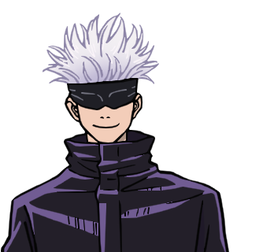
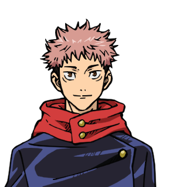
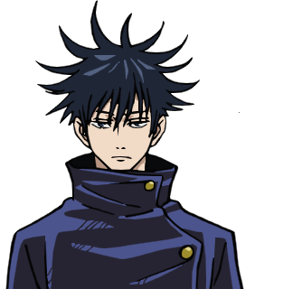
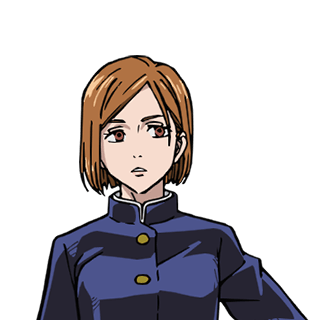

Kenali karakter-karakter dalam dunia Jujutsu Kaisen.

Penyihir Jujutsu terkuat yang memiliki teknik Limitless dan kemampuan Six Eyes.

Siswa SMA yang memiliki kekuatan fisik luar biasa dan menjadi wadah bagi Sukuna.

Penyihir Jujutsu yang menggunakan teknik Ten Shadows untuk memanggil shikigami.

Penyihir Jujutsu yang menggunakan palu, paku, dan teknik kutukan berbasis boneka jerami.